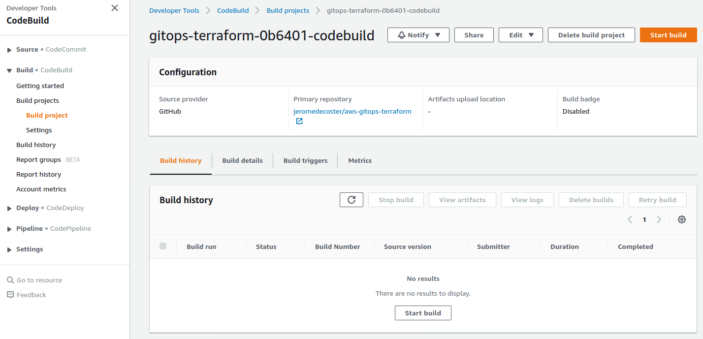
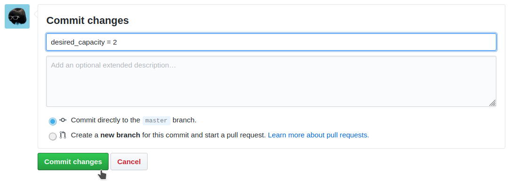

GitOps + Terraform
- We have created a great HTML site.
- It is powered via an Apache VirtualHost.
- The site is hosted on AWS. We use an Auto Scaling Group, Elastic Load Balancer and EC2.
- The AWS infrastructure used is defined via Terraform files.
- We use Codebuild to automatically deploy any new version of our infrastructure or our website.
- Each git push on our repository will start to a new deployment.
- The deployment pipeline is also created via Terraform files.

Install and setup the project
Get the code from this github repository :
# download the code
$ git clone \
--depth 1 \
https://github.com/jeromedecoster/aws-gitops-terraform.git \
/tmp/aws
# cd
$ cd /tmp/aws
Clone or fork the project.
Then adjust this git URL in the user-data.sh file :
# adjust the URL with your repository
git clone https://github.com/jeromedecoster/aws-gitops-terraform.git --depth 1
GitOps in a few points
- The concept was created by WeaveWorks. Here is the founding post file and here is an update.
- Infrastructure as Code : We define declaratively our infrastructure using YAML files. So we use tools like Terraform, Ansible, …
- Manual operations via
sshare prohibited. Everything must be done declaratively and stored in a git repository. So we say that : Git is our only source of truth. - Since we do not make any manual changes, we can easily replicate our deployments. We are talking about immutable deployments or immutable infrastructure.
- The Infrastructure as Code is managed in a git repository, so we have a clear history of evolutions with the different commits and the log messages. It also facilitates rollbacks.
- There are 2 deployment strategies : push and pull.
- The push strategy is the simplest. It’s a classic approach :
- We have a repo for the application (app) and a repo for the environment (env).
- A new commit to the app repo starts a build pipeline.
- Once the tests are successful, we build a new container with the application and store it in a registry.
- We notify the env repo that a new image is available.
- This change will trigger the deployment pipeline to replace the old image with the new one.
- The pull strategy is more advanced. It requires specific tools. I’m skipping for now…
Exploring the project
This project is simpler than what was described previously in the push strategy.
We use a monorepo here and we do not build a docker image. This approach diverges from the recommendations and should not be used for real projects. This approach is however sufficient to make a first demonstration.
Let’s look at some parts of the source code.
If we look the Makefile, we have some actions to build and use the project :
setup-create: # create the settings.sh files + the AWS S3 bucket
bin/setup.sh create
ssh-key-create: # create SSH keys + import public key to AWS
bin/ssh-key.sh create
deployment-pipeline-init: # create terraform.tfvars + terraform init the deployment pipeline
bin/deployment-pipeline.sh init
deployment-pipeline-apply: # terraform plan + terraform apply the deployment pipeline
bin/deployment-pipeline.sh apply
The codebuild.tf file is used to :
- Create the CodeBuild project with aws_codebuild_project.
- Listen the github repository changes with aws_codebuild_webhook.
resource aws_codebuild_project codebuild {
name = "${local.project_name}-codebuild"
service_role = aws_iam_role.codebuild_role.arn
build_timeout = 120
source {
type = "GITHUB"
location = "https://github.com/${var.github_owner}/${var.github_repository_name}.git"
git_clone_depth = 1
report_build_status = true
}
artifacts {
type = "NO_ARTIFACTS"
}
environment {
compute_type = "BUILD_GENERAL1_SMALL"
# https://github.com/aws/aws-codebuild-docker-images/blob/master/al2/x86_64/standard/3.0/Dockerfile
image = "aws/codebuild/amazonlinux2-x86_64-standard:3.0"
type = "LINUX_CONTAINER"
}
logs_config {
cloudwatch_logs {
group_name = "${local.project_name}-log-group"
stream_name = local.project_name
}
}
}
resource aws_codebuild_webhook webhook {
project_name = aws_codebuild_project.codebuild.name
filter_group {
filter {
type = "EVENT"
pattern = "PUSH"
}
filter {
type = "HEAD_REF"
pattern = "master"
}
}
filter_group {
filter {
type = "EVENT"
pattern = "PULL_REQUEST_CREATED,PULL_REQUEST_UPDATED,PULL_REQUEST_REOPENED"
}
filter {
type = "BASE_REF"
pattern = "master"
}
}
}
The buildspec.yaml file is used to :
- Allow CodeBuild to execute some generation steps.
version: 0.2
phases:
pre_build:
commands:
- echo ······ pre_build `date` ······
- buildspec/pre-build.sh
build:
commands:
- echo ······ build `date` ······
- buildspec/build.sh
post_build:
commands:
- echo ······ post_build `date` ······
The pre_build step is defined in an executable bash script. The pre-build.sh file is used to :
- Simply install Terraform.
#!/bin/bash
echo ······ install terraform ······
cd /usr/bin
curl -s -qL -o terraform.zip https://releases.hashicorp.com/terraform/0.12.24/terraform_0.12.24_linux_amd64.zip
unzip -o terraform.zip
The build step is also defined in an executable bash script. The build.sh file is used to :
- Deploy the infrastructure described in the infra directory with Terraform.
- Destroy the previous EC2 instances and Auto Scaling Groups with aws cli before creating new ones.
#!/bin/bash
echo ······ source settings.sh ······
cd $CODEBUILD_SRC_DIR
source settings.sh
echo ······ AWS_REGION=$AWS_REGION ······
echo ······ S3_BUCKET=$S3_BUCKET ······
echo ······ SSH_KEY=$SSH_KEY ······
echo ······ terraform init ······
cd infra
terraform init \
-input=false \
-backend=true \
-backend-config="region=$AWS_REGION" \
-backend-config="bucket=$S3_BUCKET" \
-backend-config="key=terraform" \
-no-color
NAME=$(terraform output | grep ^project_name | sed 's|.*= ||')
echo ······ NAME=$NAME ······
if [[ -n "$NAME" ]]; then
ID=$(aws autoscaling describe-auto-scaling-groups \
--auto-scaling-group-names $NAME \
--query "AutoScalingGroups[?AutoScalingGroupName == '$NAME'].Instances[*].[InstanceId]" \
--output text)
echo ······ ID=$ID ······
if [[ -n "$ID" ]]; then
echo ······ terminate EC2 instances ······
echo "$ID" | while read line; do
aws ec2 terminate-instances --instance-ids $line
done
echo ······ sleep 5 seconds ······
sleep 5
fi
echo ······ delete auto scaling group ······
aws autoscaling delete-auto-scaling-group \
--auto-scaling-group-name $NAME \
--force-delete
echo ······ sleep 10 seconds ······
sleep 10
while [[ -n $(aws autoscaling describe-auto-scaling-groups \
--auto-scaling-group-names $NAME \
--query "AutoScalingGroups[?AutoScalingGroupName == '$NAME']" \
--output text) ]]; do
aws autoscaling describe-auto-scaling-groups \
--auto-scaling-group-names $NAME \
--query "AutoScalingGroups[?AutoScalingGroupName == '$NAME'].[Status]" \
--output text
echo ······ waiting auto-scaling-group destruction. sleep 20 seconds ······
sleep 20
done
fi
echo ······ terraform plan ······
terraform plan \
-var "ssh_key_name=$SSH_KEY" \
-out=terraform.plan \
-no-color
echo ······ terraform apply ······
terraform apply \
-auto-approve \
terraform.plan \
-no-color
It is important to note that we are using an S3 backend.
The state of our infrastructure will therefore be stored remotely.
The terraform.tf file declare :
terraform {
# 'backend-config' options must be passed like :
# terraform init -input=false -backend=true \
# [with] -backend-config="backend.json"
# [or] -backend-config="backend.tfvars"
# [or] -backend-config="<key>=<value>"
backend "s3" {}
}
The backend values are defined externally within the build.sh file :
terraform init \
-input=false \
-backend=true \
-backend-config="region=$AWS_REGION" \
-backend-config="bucket=$S3_BUCKET" \
-backend-config="key=terraform" \
-no-color
The asg.tf file is used to :
- Create an Load Balancer with aws_lb.
- Create a EC2 Auto Scaling Group with aws_autoscaling_group.
- Create a listener with aws_lb_listener.
resource aws_launch_configuration launch_configuration {
name = local.project_name
image_id = data.aws_ami.latest_amazon_linux.id
instance_type = "t2.micro"
security_groups = [aws_security_group.security_group.id]
user_data = file("${path.module}/user-data.sh")
lifecycle {
create_before_destroy = true
}
}
resource aws_autoscaling_group default {
name = local.project_name
max_size = 3
min_size = 1
desired_capacity = 1
launch_configuration = aws_launch_configuration.launch_configuration.name
target_group_arns = [aws_lb_target_group.target_group.arn]
vpc_zone_identifier = data.aws_subnet_ids.subnet_ids.ids
lifecycle {
create_before_destroy = true
}
}
resource aws_lb_listener http {
load_balancer_arn = aws_lb.lb.arn
port = "80"
protocol = "HTTP"
default_action {
target_group_arn = aws_lb_target_group.target_group.arn
type = "forward"
}
}
Each EC2 instance started will execute this user-data.sh script :
- We install httpd and git.
- We clone our git repository.
- We move our website to the
/var/www/vhosts/example.comdirectory. - Then we enable and start httpd with systemd.
#!/bin/bash
sudo yum --assumeyes update
sudo yum --assumeyes install httpd git
mkdir /var/www/vhosts
cd /tmp
git clone https://github.com/jeromedecoster/aws-gitops-terraform.git --depth 1
mv aws-gitops-terraform/www /var/www/vhosts/example.com
cat <<EOF > /etc/httpd/conf.d/vhost.conf
<VirtualHost *:80>
# REQUIRED. Set this to the host/domain/subdomain that
# you want this VirtualHost record to handle.
ServerName example.com
# REQUIRED. Set this to the directory you want to use for
# this vhost site's files.
DocumentRoot /var/www/vhosts/example.com
# REQUIRED. Let's make sure that .htaccess files work on
# this site. Don't forget to change the file path to
# match your DocumentRoot setting above.
<Directory /var/www/vhosts/example.com>
AllowOverride All
</Directory>
</VirtualHost>
EOF
sudo systemctl enable httpd
sudo systemctl start httpd
And of course we have our great website page :
<html lang="en">
<head>
<title>Fox or Bear</title>
</head>
<body>
<h1>Fox</h1>
<img src="fox.jpg" alt="A Fox">
<!-- <h1>Bear</h1>
<img src="bear.jpg" alt="A Bear"> -->
</body>
</html>
Setup Github
We need to create a github token with repo and admin:repo_hook selected :
We receive our Github token :

Run the project
Let’s start :
# create the settings.sh files + the AWS S3 bucket
$ make setup-create
create settings.sh
# it creates a bucket with a random suffix
create gitops-terraform-vlw4 bucket
make_bucket: gitops-terraform-vlw4
The settings.sh file has been created. You can change the region if you want :
AWS_REGION=eu-west-3
SSH_KEY=gitops-terraform
S3_BUCKET=gitops-terraform-vlw4
We create an SSH key to connect to EC2 instances if we need to :
# create SSH keys + import public key to AWS
$ make ssh-key-create
create gitops-terraform.pem + gitops-terraform.pub keys — without passphrase
import gitops-terraform.pub key to AWS EC2
{
"KeyFingerprint": "2b:a0:de:aa:bb:cc:dd:ee:ff:gg:hh:ii:jj:kk:ll:mm",
"KeyName": "gitops-terraform"
}
The key is displayed in the Key pairs sub-menu of the EC2 interface :
Creation of the deployment pipeline
We will create the CodeBuild pipeline linked to our github project :
# create terraform.tfvars + terraform init the deployment pipeline
$ make deployment-pipeline-init
init terraform
Initializing the backend...
# ...
create terraform.tfvars file
warn you must define /tmp/aws/deployment-pipeline/terraform.tfvars
terraform.tfvars
github_token = ""
github_owner = ""
github_repository_name = ""
We must define the 3 variables :
- Use your previously generated github token.
github_token = "2.....2"
github_owner = "jeromedecoster"
github_repository_name = "aws-gitops-terraform"
We must now validate and push this file in our repository on github because these variables will be used by the deployment pipeline.
I choose to create the file directly from the web interface.
I create a file :

I name it settings.sh and copy and paste the content :
Then I commit it :
Our pipeline can now be deployed :
# terraform plan + terraform apply the deployment pipeline
$ make deployment-pipeline-apply
CodeBuild is created :

Creation of the infrastructure and publication of the site
We will now modify the file index.html. The commit will trigger the deployment pipeline.
We uncomment the Fox part :
We commit this modification :
CodeBuild activates automatically :
We can see in the logs that Terraform is installed :
After a short wait we have the final success message :
We can see in the EC2 interface that the Auto Scaling group is running :
We have 1 instance started :

Let’s go see the Load Balancer. We get the DNS name URL :
And by pasting this address into our browser, we see :
Change the infrastructure
We now want to update our architecture.
Our site is a huge success. We want to have 2 instances started to support the incessant traffic.
We just need to edit the file asg.tf :
We change the value desired_capacity from 1 to 2 :
We commit this change :

The deployment pipeline activates again. We see in the logs that the Auto Scaling Group is stopped :
This is the major weakness of this infrastructure : an auto scaling group takes about 5 minutes to stop ! Such an architecture is therefore not acceptable in production.
Here are some possible solutions :
- Using Terraform for zero downtime updates of an Auto Scaling group in AWS
- Amazon Web Services AutoScaling Group Roller
We would however like to use simpler solutions.
After a long wait, here is our new Auto Scaling Group :
We now have 2 instances running :
Change the site
We now want to update our site. We will edit the file index.html :
- We comment on the Fox part.
- We uncomment the Bear part.
We commit this modification :
CodeBuild activates automatically :
And after 5 minutes, by reloading our browser :
We have 2 new instances started :
We finished. We can destroy our architecture. We start with the deployment pipeline :
# terraform destroy the deployment pipeline
$ make deployment-pipeline-destroy
To destroy the site infrastructure, we must first initialize terraform locally :
# terraform init the project infrastructure
$ make infra-init
Then ask for destruction :
# terraform destroy the project infrastructure
$ make infra-destroy